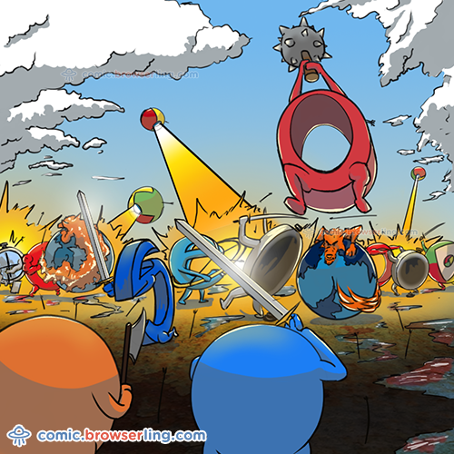

Let’s talk about about the “Browser Wars.” They kicked off in the mid-90s, at a time when the world was just starting to come online. The web was still a fuzzy, undefined medium. Those who did decide to visit the web for the first time found themselves standing at the precipice of a technological arms race between two behemoth browsers. It was a conflict that was public, publicized and wide reaching. Its repercussions would ripple out to web designers, web users and the software community at large for years to come. If 1995 did feel like the right time to check out the World Wide Web, chances are pretty high that you would be using one browser in particular to do it. Netscape Navigator. Netscape had a pretty meteoric rise to the top of the web world. The company began pretty soon after software engineer Marc Andreessen graduated from the University of Illinois in 1994. While he was studying there, he had worked on one of the first ever cross platform browsers, NCSA Mosaic, which became the most popular among early browser choices.
So not long after he left Illinois, Andreessen was contacted by Jim Clark, a bit of a legend in the Silicon Valley area. Clark and Andreessen met a few times, and decided that a top of the line commercial browser was exactly what the market needed. So they went back to NCSA, and walked out with a team of top engineers ready to make that happen. By the end of 1994, they had already delivered a first step. Originally slated to be called Mosaic, the browser they released to the world became known (mostly for legal reasons) as Netscape Navigator, and the company, Netscape Communications. If you were trying to connect to the web in the 90’s, you’d most likely head down to your local computer shop and check out what browsers they had for sale. There was, after all, some alternatives to Netscape. Spyglass Incorporated, for instance, had licensed code from NCSA to create their own commercial browser. Ultimately, this code was rewritten, but it was still released as Spyglass Mosaic.